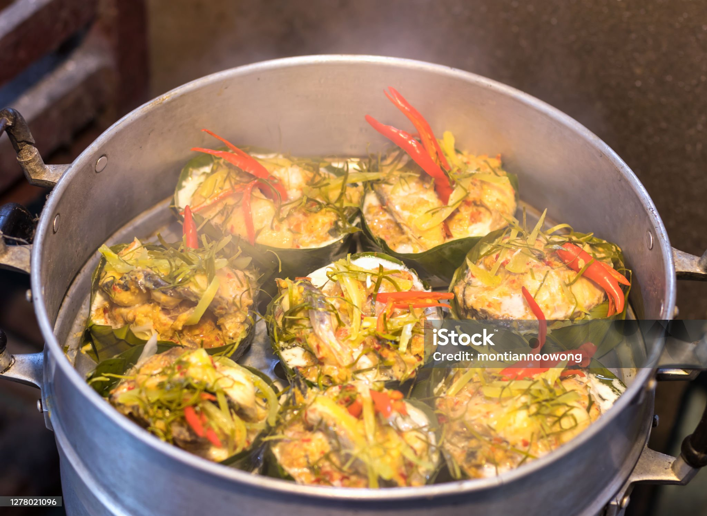

What is Amok?
Amok is one of the favorite delicacies in Cambodia. It is a mild curried concoction prepared usually from fish, with coconut milk and special spices. It is much loved in Cambodia, and tourists also enjoy trying it.
Cooking Style
Amok is special in that it is cooked in banana leaves. The fish and curry batter are placed inside the leaves and steamed until thick and creamy. The banana leaves impart a wonderful aroma to the dish.
Taste of Amok
The flavor was brought about by something called kroeung type local herbs consisting of lemongrass, garlic, turmeric, and other herbs. The coconut milk gives a smooth and rich feel to the curry, with eggs binding everything together.
Other Ingredients
While fish finds the most common acceptance, some prefer chicken with tofu, and other times, seafood is also used. It is always served with white rice, making it a full meal.
Cultural Aspect
Amok is more than just a dish; it is a part of Cambodian life. It is often prepared on special occasions, during family gatherings, or to keep guests pleased. Some families have their own recipes, passed down through years.
Popular All over
Nowadays, Amok can be found all over Cambodia, from markets, small street food stalls, to fine dining restaurants. The dish thus stands for the warm and rich culture of Cambodians.
Ingredients

- 250g Fish
- 2 sheets banana leaves
- 100g galangal
- 100 turmeric
- 1 red onion
- 2 kaffir lime leaves
- 3 galic cloves
- 2 eggs
- 100g peanuts
- 250 coconut cream
- 3 star anise
- 1 teaspoon salt
- 3 sticks lemongrass
Directions
- Make a banana leaf basket.
- Chop lemongrass, turmeric, and galangal.
- Add to chopped red chilli and red onion garlic & kaffir lime.
- Add peanuts and coconut cream.
- Mix in blender until very smooth.
- Chop 'noni' leaf and fish.
- Heat pan, add oil and then kreung.
- Add star anise to pan.
- Season with salt & add a spoonful of coconut milk.
- Add the fish.
- Stir and let simmer.
- Beat egg and add to pan.
- Add 'noni' leaf.
- Add mixture to banana leaf bowl.
- Cover with more beaten egg.
- Steam for around 10 minutes.